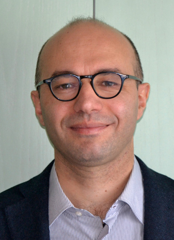

Fusing neural perception with symbolic reasoning toward genuinely intelligent robotic systems
Over the past decade, deep learning has demonstrated remarkable effectiveness across many domains, and robotics has likewise begun to embrace deep neural models for learning sophisticated perception modules and control policies. One of the primary strengths of deep learning in robotics is its capacity to model high-dimensional policy spaces directly from raw data. However, deploying such models in real robotic systems exposes several persistent limitations — in reasoning, explainability, modularity, and robustness — that restrict their use in safety-critical applications.
In contrast, humans rely heavily on abstraction and symbolic reasoning — abilities that enable generalization, high-level cognition, and the manipulation of conceptual structures. Symbolic AI addresses these capabilities by operating over discrete symbols and logical rules, yielding transparent reasoning and natural language-level interpretability. The bottleneck, however, lies in constructing suitable symbolic representations: we still lack reliable automated procedures for generating symbols and rules that meet the demands of a given task.
Neurosymbolic AI has emerged as a promising middle ground, fusing the representational power of neural networks with the compositional and interpretable nature of symbolic reasoning. Such hybrid architectures combine bottom-up perceptual strength with top-down logical inference. Interest has surged in recent years — Garcez and Lamb provide a broad survey of classical and modern approaches, and AAAI has introduced a dedicated focus track on neurosymbolic AI, reflecting the field's rapid growth.
Despite this momentum, neurosymbolic methods remain relatively unexplored within robotics. Yet robotics is uniquely positioned to benefit: robots process rich, continuous sensorimotor data streams while also needing to reason abstractly, plan ahead, and act safely over long horizons. A neurosymbolic robotics framework could unify low-level perception with high-level cognition, pushing the field toward genuinely intelligent systems. This workshop seeks to explore that potential and spark debate on the most promising paths forward.
Neural networks excel at pattern recognition but struggle with structured, logic-based inference. Logical reasoning requires discrete, well-defined representations — whereas neural models operate in continuous vector spaces.
Understanding why a deep model behaves a certain way remains elusive. The absence of transparent, human-interpretable mechanisms is a critical concern for safety-critical deployments.
Knowledge encoded in deep models is hard to disentangle and transfer across tasks. Systematic reuse of learned competencies remains an open problem despite advances in transfer learning.
Opaque decision boundaries make it difficult to anticipate failures. Deep models remain vulnerable to adversarial perturbations and naturally occurring perceptual distortions.
The workshop welcomes contributions and discussion around the following themes at the intersection of neural and symbolic approaches in robotics.
The following researchers have confirmed their participation as speakers and panelists.

| Time | Session |
|---|---|
| 08:30 – 08:45 | Welcome speech by the organizing committee Welcome |
| 08:45 – 09:30 | Invited Speaker 1 Invited |
| 09:30 – 10:15 | Invited Speaker 2 Invited |
| 10:15 – 11:00 | Invited Speaker 3 Invited |
| 11:00 – 11:15 | Coffee Break & Poster Session Break |
| 11:15 – 11:45 | Invited Speaker 4 Invited |
| 11:45 – 12:00 | Contributed Oral Talks Contributed |
| 12:00 – 12:45 | Invited Speaker 5 Invited |
| 12:45 – 13:00 | Farewell & Closing Remarks Closing |
We invite submissions from researchers working at the intersection of neural and symbolic approaches in robotics and AI. Accepted contributions will be presented as oral talks (5–15 minutes) and/or posters, depending on quality assessed by reviewers.
We aim to draw a diverse, interdisciplinary audience. We strongly encourage submissions from underrepresented researchers and communities, and the review process will consider gender, race, ethnicity, and geographic balance.
The organizing team spans multiple continents and institutions specifically to ensure diversity of reach — we welcome participants who do not traditionally attend ICDL.
The workshop is organized by an international team spanning six institutions across four countries.